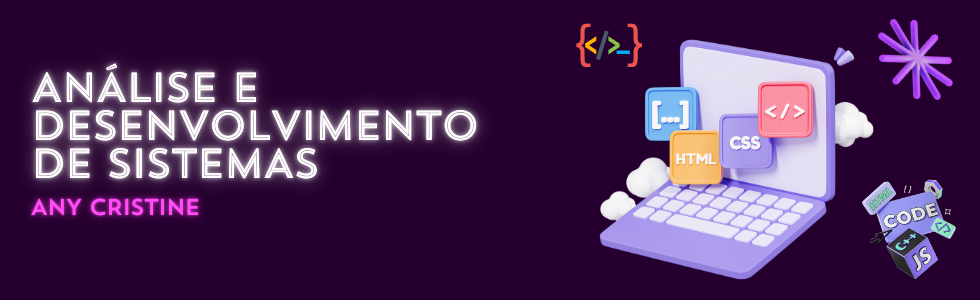

Bem-vindo ao meu portfólio!
Formação
Atualmente estou cursando Análise e Desenvolvimento de Sistemas na Uninter Itajaí/SC, onde aprendo sobre programação, banco de dados e desenvolvimento web.
Até o momento percebi que estou me relacionando melhor com a parte de desenvolvimento web, possuo experiência como designer gráfico e criação de projetos para comunicação visual, então acredito que essa área tem tudo a ver comigo.
Também tenho interesse em me aprofundar em linguagens como JavaScript e Python.
Além de uma predisposição a área administrativa, pois cursei por um tempo ciências contábeis, onde adquiri habilidade na rotina administrativa, contribuindo para uma visão mais analítica dos procedimentos internos.
